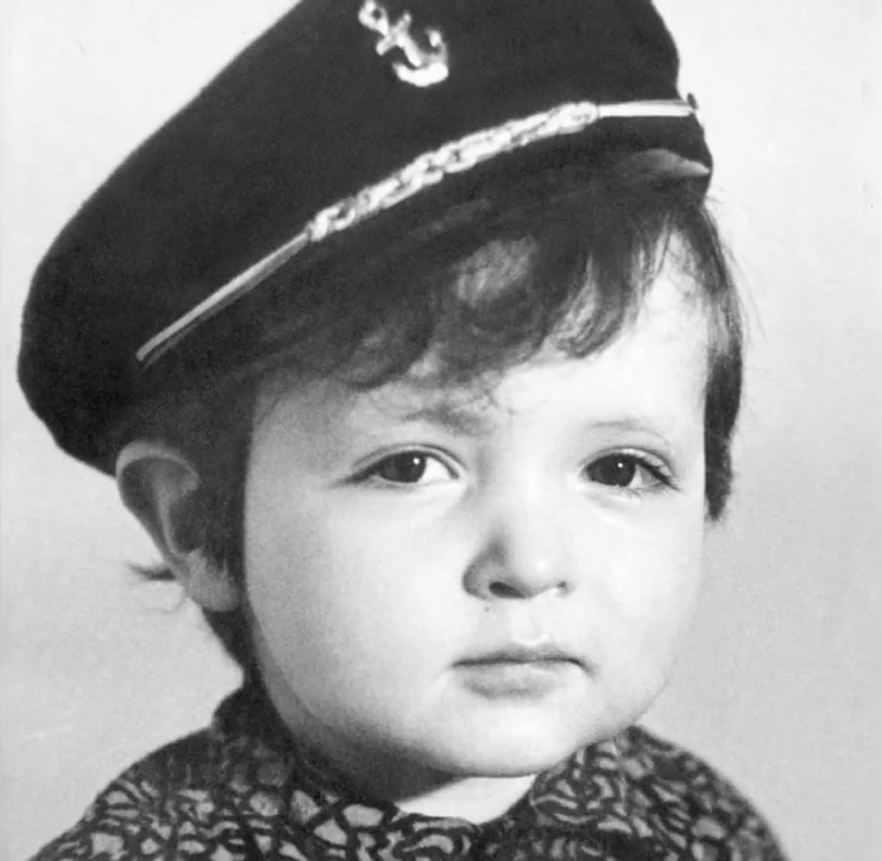
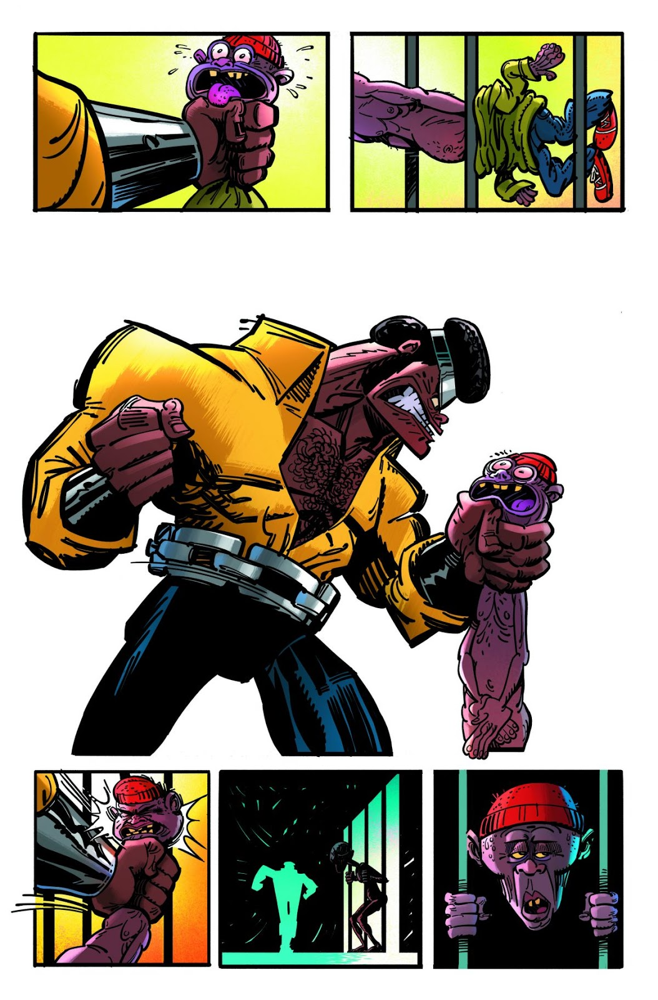
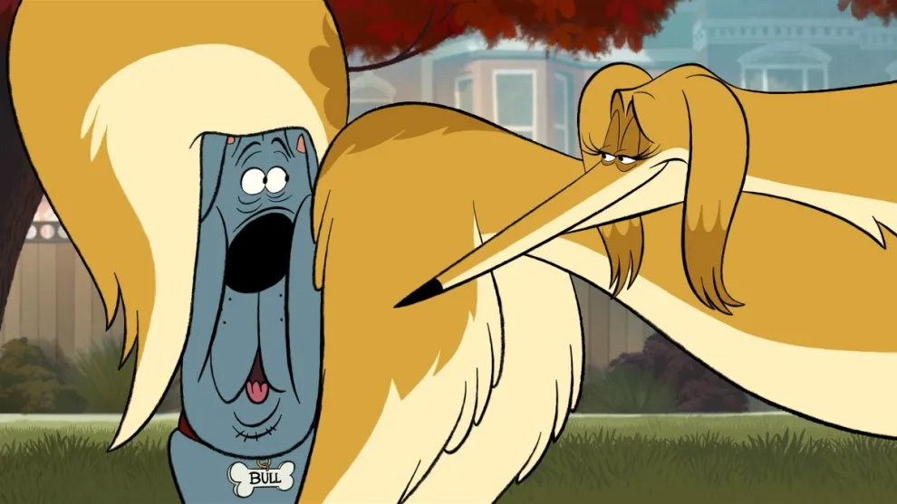
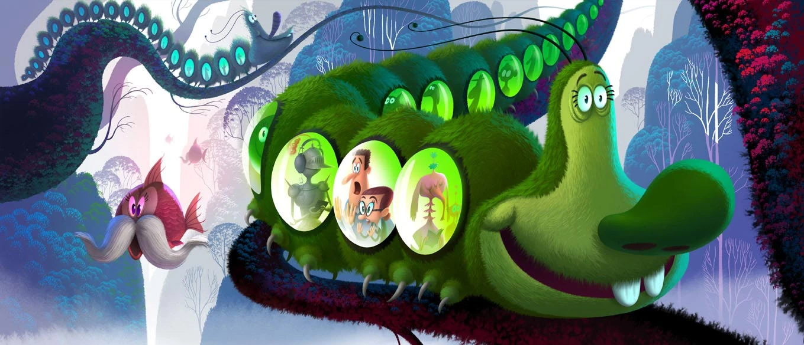
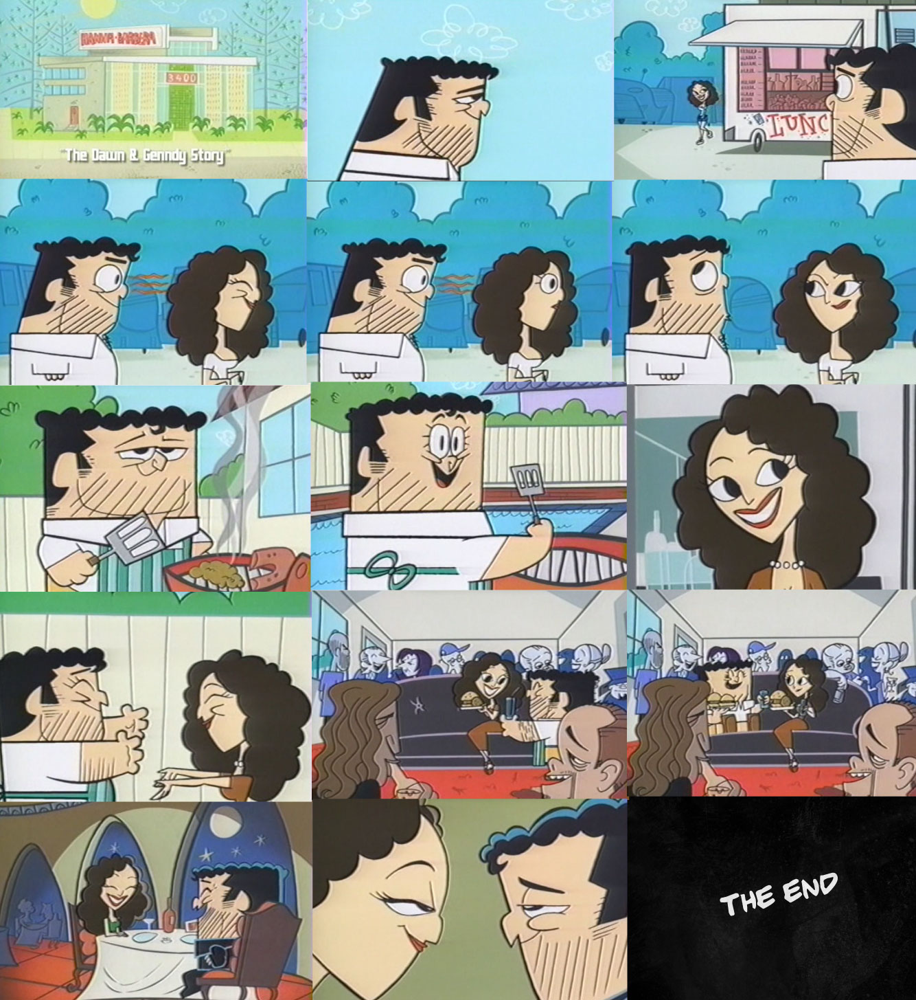

Early Life
Born January 17th, 1970 in Moscow to Jewish parents, Tartakovsky’s family was well off because his father was a dentist and his mother was a vice principal. But with antisemitism growing in Russia, the family immigrated to Italy where Tartakovsky got his first taste for drawing. After moving to Chicago, Illinois, Tartakovsky marinated himself in American culture by watching cartoons like The Super Friends and reading comic books.
Education and Early Career
After High school, Tartakovsky attended Columbia College Chicago. Encoraged by his family to major in business, he was too late in signing up for advertising class, and instead enrolled in animation. From there, the medium consumed him as he drew picture after picture building a portfolio. When his brother Alex moved for college, he bunked with Rob Renzetti. Renzetti and Genddy bonded over their love for animation and several weeks later, they were accepted to the California Institute of the Arts.It was there that Tartakovsky met two more lifelong collaborators friends: Paul Rudish and Craig McCracken.
Paul Rudish
Craig McCracken
After Graduating CalArts, Tartakovsky was hired by Lapiz Azul Productions where he worked on Batman: The Animated Series and learned about the labor intensive environment of his career.A few years later, McCracken got him hired at Hanna-Barbera where he worked on Donovan Cook's 2 Stupid Dogs
.While working on 2 Stupid Dogs, Tartakovsky expanded on one of his student films from CALARTS. After refining the story and producing the animation, he presented it to Fred Siebert, who entered it into Cartoon Network's What a Cartoon Show! which spotlighted new shorts from upcoming talent. The name of the show?Dexter's Laboratory:

Dexter's Laboratory was one of the top three highest rated pilots on the What a Cartoon Show! alongside The Powerpuff Girls which was created by his colleague, McCracken. In fact, Tartakovsky and McCracken were such good friends that they coproduced and codirected several episodes of each other's shows. Both Dexter's Laboratory and The Powerpuff Girls were nominated for seveal emmys and annie awards throughout the 1990s and early 2000's, and Tartakovsky even served as the animation director for The Powerpuff Girls Movie:

Achievements
Creator of Dexter's Laboratory, where he assimilated with Hanna-Barbera's limited animation approach to comedy and collaborated with many of his CALARTS colleagues.
Coproducer and codirector of The Powerpuff Girls
Director of Dexter's Laboratory: Ego Trip, which capped off his time on Dexter's Laboratory before moving onto new projects.
Creator of Samurai Jack, which birthed his stylized character deisgns, fast paced action, dynamic movements, and minimalistic dialogue. Though the series ended on a cliffhanger in 2004, Tartakovsky produced a final fifth season in 2017.
Animation director of The Powerpuff Girls Movie. His final gig on The Powerpuff Girls before moving onto Samurai Jack.
Showrunner of Star Wars: Clone Wars (2003). George Lucas was so impressed with Samurai Jack that he comissioned Tartakovsky to develop a mini-series bridging the gap between Attack of the Clones and Revenge of the Sith.The result is the best Star Wars narrative from the prequel era until the eventual 3D Clone Wars in 2008. No other animators could've pulled this off better than Tartakovsky with his growing experience in action. He eve fixed the dialogue that Harrison Ford critcized in the original trilogy.
Director of Hotel Transylvania
Hotel Transylvania 2
Hotel Transylvania 3: Summer Vacation
Goodnight Mr. Foot
Puppy.
Cowriter of Hotel Transylvania: Transformania.
Cocreator of Sym-Bionic Titan
Animation Director to the prologue of Priest
Though the film was a critical and financial flop, the prologue was positively received by everyone for its gothic atmosphere and fight sequences.
- Creator of Primal
Considered his magnum opus, the show's unapologetically brutal violence in prehistoric times set it apart from other adult animated shows that used cursing and gore as a means for a mature rating rather than benefiting the story and lore.
Creator of Unicorn: Warriors Eternal
Though short lived, the series has gained a cult following for the imaginative world and stylized action.
- Author of Cage!
A stand alone adaptation of the Marvel comics character Luke Cage, Tartakovsky brought his animation the same way animators bring their to storyboards. The results are
 Director of Fixed

Tartakovsky translated his stylized characters and timing skills to computer animation with some of the best slapstick of the 2010s decade.
Winner of sevearl Annies, Emmys, and the Winsor McCay Award
Challenges and Obstacles
Tartakovsky's road to fame was fraught with hardships. At age 16, his father died of a heart attack, and the family moved into government funded housing. For several years, Tartakovsky worked a job in highschool while building his portfolio. A few months after he was hired at Lapiz Azul Productions, his mother died from cancer leaving him in turmoil, though his brother Alex encouraged him to stay on his career path.
Despite his reputation in the animation industry, not all of his projets saw the light of day. While the Hotel Transylvania movies were financially successfully, Sony pulled the plug on both Can You Imagine and Popeye despite the positive reception towards the latter's animation test.

Personal Life
His personal time and relationships were affected by his ambitions before his shows were picked up by network television, although he eventually met Dawn David in 1995 and married her in 2000. As of 2025, they have three kids.
As of 2025, Warner Brothers dropped their distribution deal for his latest film Fixed, about a dog who goes out on the town before his vetrenarian appointmenet. However, Netflix scooped up the distribution rights with a release date of August 13th, 2025. Season 3 of Primal is set to release in 2025, although there has been no concrete date. He is also working on a new film called Black Knight with few details released.
Legacy and Impact
Tartakovsky's work has impacted many yong animators working in the industry today. He is a frequent guest star on many YouTube channels giving tips on how to improve drawings and animations for future artist who want to go into art careers whether using hand drawn or CGI.Final Thoughts
In conclusion, Genndy Tartakovsky is a modern legend in animation with his ability to change animation styles and tones. His work has contributed to the success of many animators including his friend Renzetti who went on to create My Life as a Teenage Robot for Nickelodeon. Whatever he works on next is sure to grab the attention of everyone who loves animation.Works Cited
Articles
- Amidi, Amid. "Sony Has Killed Genndy Tartakovsky’s ‘Popeye’." Cartoon Brew (2015).
- —."Warner Bros. Will No Longer Release Genndy Tartakovsky’s ‘Fixed’." Cartoon Brew (2024).
- DeVore, Britta."'Samurai Jack' Creator Genndy Tartakovsky Just Dropped an Epic Update on His ‘Black Knight’ Movie [Exclusive]." Collider (2024)
- Wasserman, Ben. "Genndy Tartakovsky Reveals When Primal Season 3 Will Be Released." Comic Book Resources (2024).
- Zahed, Ramin. "First Look: Netflix Rescues Genndy Tartakovsky’s ‘Fixed’ from the Dog House!." Aimation Magazine (2025)
Books
- Jones, Brian Jay. George Lucas: A Life. New York: Little, Brown and Company, 2016.
- Lenburg, Jeff. Genndy Tartakovsky: From Russia to Coming-of-Age Animator. New York: Chelsea House Pub, 2012.
- Tembo, Kwasu David. Genndy Tartakovsky: Sincerity in Animation. London: Bloomsbury Academic, 2022.
Films
- Dexter's Laboratory: Ego Trip. Dir. Genndy Tartakovsky. Hanna-Barbera Cartoons. 1999.
- Genndy's Scrapbook: The Story of Genndy Tartakovsky. Dir. Artur Spigel and Craig S. Phillips. 7Ate9 Entertainment. 2005.
- Hotel Transylvania. Dir. Genndy Tartakovsky. Sony Pictures Animation. 2012.
- Hotel Transylvania 2. Dir. Genndy Tartakovsky. Sony Pictures Animation. 2015.
- Hotel Transylvania 3: Summer Vacation. Dir. Genndy Tartakovsky. Sony Pictures Animation. 2018.
- Hotel Transylvania: Transformania. Dirs. Derek Drymon and Jennifer Kluska. Sony PIctures Animation. 2022.
- Priest. Dir. Scott Stewart. Screen Gems, Tokyopop. 2011.
- The Powerpuff Girls Movie. Dir. Craig McCracken. Cartoon Network Studios. 2002.
TV Shows
- 2 Stupid Dogs. Created by Donovan Cook. Hanna-Barbera Cartoons. 1993-1995.
- Batman: The Animated Series. Created Eric Radomski and Bruce W. Timm. Warner Bros. Animation. 1992-1995.
- Dexter's Laboratory. Created by Genndy Tartakovsky. Cartoon Network Studios, Hanna-Barbera Cartoons. 1995-1998.
- Primal. Created by Genndy Tartakovsky. Cartoon Network Studios, Williams Street. 2019-Present.
- Samurai Jack. Created by Genndy Tartakovsky. Cartoon Network Studios, Williams Street. 2001-2004, 2017.
- Star Wars: Clone Wars. Created by Genndy Tartakovsky. Cartoon Network Studios, Lucasfilm. 2003-2005.
- Sym-Bionic Titan. Created by Brian Andrews, Paul Rudish and Genndy Tartakovsky. Cartoon Netowrk Studios, Orphanage Animation Studios. 2010-2011.
- The Powerpuff Girls. Created by Craig McCracken. Cartoon Network Studios, Hanna-Barbera. 1996-1999, 2001-2003.
- Unicorn: Warriors Eternal. Created by Genndy Tartakovsky. Cartoon Network Studios. 2023-2023.
Rob Renzetti